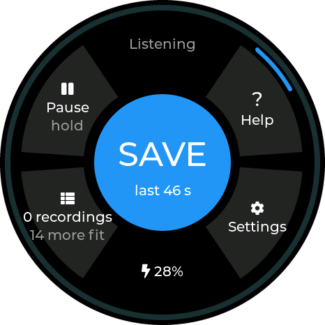

Round Recorder
Rewind the last three minutes. An offline pocket voice recorder for the Waveshare ESP32-S3-Touch-AMOLED-1.75C.
Install
- Use Chrome or Edge on a laptop or desktop.
- Plug the board in with a USB-C data cable.
- Press Install and pick the board's port.
The first time, let it erase the board: that clears the firmware it came with.
Updating later? Leave Erase off, or the recordings on the board go too.
Then
- Press SAVE, or the top side button, to keep the last three minutes.
- Tap ? for a short tour of the screen.
- To copy recordings to your laptop as WAV files, use
tools/pull.pyfrom the project on GitHub (Linux or macOS).
Recording people can need their consent where you live: check before you use it on others. Open source under the MIT license. Source and instructions.